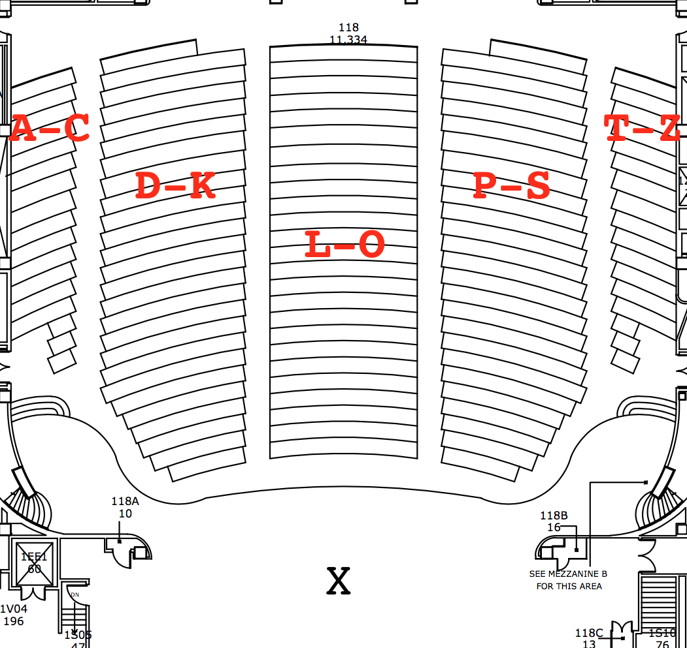

General Information
- The exam was:
Tuesday, 22 May, 9-11am,
118 North (Assembly Hall)
- It covered the material in:
- Mock Exam: a practice exam was given in lecture on Tuesday, 15 May 2018 (11:10am-12:25pm, 118HN).
- Exams Given:
- Early exam (Thursday, 17 May): Version 1 (Green):
exam and
answer key
- Regular exam (Tuesday, 22 May): Version 2 (Blue): exam and
answer key
- Regular exam (Tuesday, 22 May): Version 3 (Purple): exam and
answer key
- Past Exams:
- Sample Exam, Fall 2017:
- Mock Exam, Fall 2017:
- Fall 2017 Exams:
Exam Rules
- The exam is closed book and closed notes.
- When taking the exam, you may have with you
- pens or pencils
- a two-sided 8.5" x 11" page of notes.
- Hunter College photo ID.
- You may not use any electronic devices (phone, computer, calculator, smart watch, etc.).
- You must be enrolled in the course to take the exam.
- The seating chart for the exam is based on your last name:

- When you enter the classroom, you will sign in with the proctor. Each proctor has the sign-in list of the students assigned to their region: A-Chak, Chan-Joh, Jos-Mec, Mig-Tsv, and Tyl-Z.
- After everyone is seated, the proctors will distribute the exams and check IDs.
- To get credit for the exam, you will need to also sign out as you turn in your exam.
- To minimize confusion, you will need to wait until all exams have been passed out and IDs checked before you can submit your exam.
How to Prepare
- Make sure you do all the problems that have been
assigned. The problems (or parts of them) make excellent exam
questions.
- Work through the past exams. These (or variations of them)
often appear on exams.
- While you can photocopy your one page of notes, preparing it by hand is
an excellent way to study. First, go through each problem and notes from each lecture, and make a list of the important concepts and ideas in each. Then, consolidate your list to fit on a single sheet of paper. Include standard formats or templates for coding constructs and design patterns, as well as samples of recurring themes.